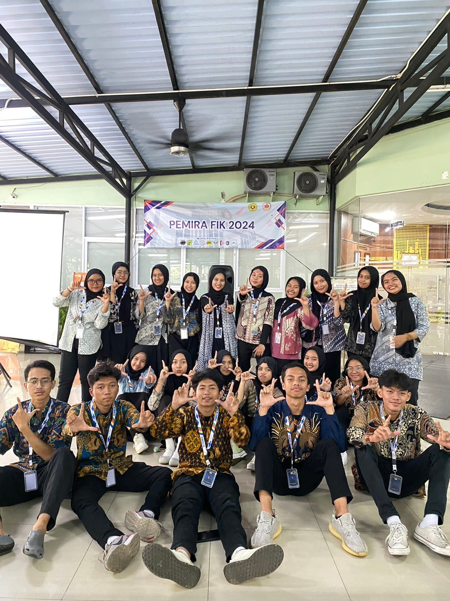
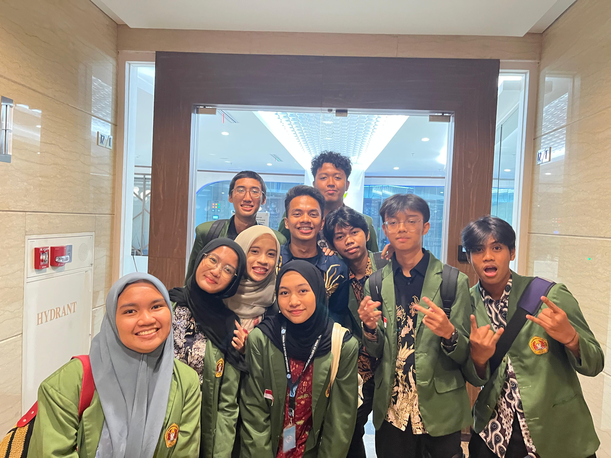
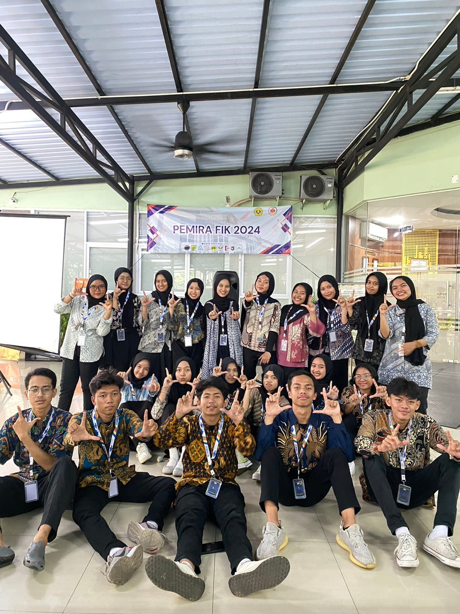
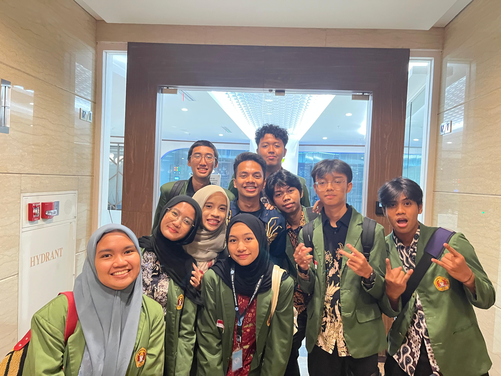

Tentang KAMI
Ruang Digital Kegiatan Kampus
UPNext hadir sebagai platform acara kampus yang menghubungkan mahasiswa, panitia, dan komunitas untuk menciptakan pengalaman belajar yang menyenangkan, inklusif, dan berbasis teknologi digital.
 



VISI
Menjadi pusat kegiatan digital kampus yang menghubungkan mahasiswa, panitia, dan komunitas untuk menciptakan pengalaman belajar yang menyenangkan dan inklusif.
MISI
- Mempermudah akses informasi kegiatan kampus.
- Menyediakan sistem pendaftaran efisien.
- Mendukung panitia dalam publikasi acara.
- Mendorong kolaborasi dan organisasi kampus.
Kenapa Kami Ada?
UPNext lahir dari semangat mahasiswa UPN Veteran Jakarta untuk menciptakan ruang digital yang menghubungkan semua kegiatan kampus dalam satu platform. Kami percaya bahwa kolaborasi, inovasi, dan teknologi bisa membawa pengalaman kampus jadi lebih seru dan inklusif.
TIM KAMI
Kenalan sama orang-orang hebat di balik acara seru kami!

Nama Anggota 1
UI/UX Designer
Nama Anggota 2
Frontend Developer
Backend Developer
Panitia Acara
Backend Developer
Panitia Acara